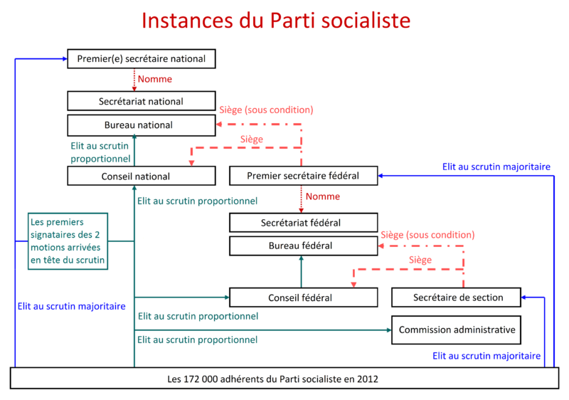

Vous venez de choisir le parti Politique : Parti Socialiste !
Le Parti socialiste (PS) est un parti politique français historiquement classé à gauche et plus récemment au centre gauche sur l’échiquier politique. Lancé en 1969, il trouve son origine dans le courant de pensée du socialisme. « Le Parti socialiste est un parti de classe qui a pour but de socialiser les moyens de production et d'échange, c'est-à-dire de transformer la société capitaliste en une société collectiviste ou communiste, et pour moyen l'organisation économique et politique du prolétariat. Par son but, par son idéal, par les moyens qu'il emploie, le parti socialiste, tout en poursuivant la réalisation des réformes immédiates revendiquées par la classe ouvrière, n'est pas un parti de réforme, mais un parti de lutte des classes et de révolution. » L’organigramme des instances du Parti socialiste depuis 2012 est composé ainsi :
né le 18 août 1968 à La Tronche (Isère), est un homme politique français. À 16 ans, il adhère au Parti socialiste, militant également à l'Union nationale des étudiants de France (UNEF). Au PS, il fait la connaissance de Benoît Hamon, avec lequel il partage une colocation. En 1991, à 23 ans, il devient secrétaire général des jeunes rocardiens, succédant à Manuel Valls. Il est, de 1991 à 1993, collaborateur du président de la commission des lois de l’Assemblée nationale française, Gérard Gouzes. De 1993 à 1997, il est cadre dirigeant d'une PME de 150 salariés. Membre du Parti socialiste, il est élu en 2012 député dans la onzième circonscription de Seine-et-Marne et devient en 2016 président du groupe socialiste, écologiste et républicain (SER) à l'Assemblée nationale. En 2018, lors du congrès d'Aubervilliers, il devient premier secrétaire du Parti socialiste.

Création de 60 000 postes dans l'éducation en 5 ans.Accompagnement personnalisé pour les élèves les plus en difficulté. Mise en place d'une formation ou d'un service civique pour les jeunes déscolarisés de 16 à 18 ans. Décloisonnement des filières à l'université pour éviter une spécialisation trop précoce. Création d'une allocation d'étude et de formation pour jeunes adultes sous condition de ressources. Création de 150 000 "Emplois d'Avenir" pour les jeunes. Promotion de l'égalité entre les femmes et les hommes en ce qui concerne les carrières professionnelles et les rémunérations. Création d'une banque publique d'investissement. Rétablissement de l'âge légal de la retraite à 60 ans pour ceux qui ont cotisé la totalité de leurs annuités, avec bénéfice du taux plein. Réintégration de l'hôpital dans le cadre du service public.